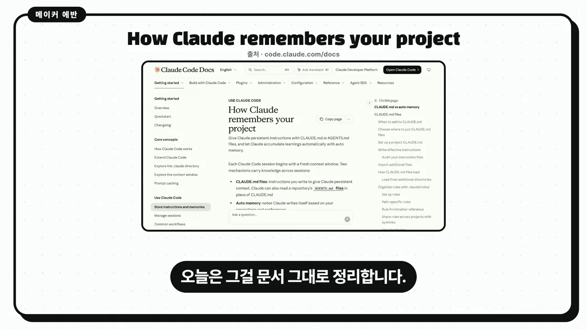
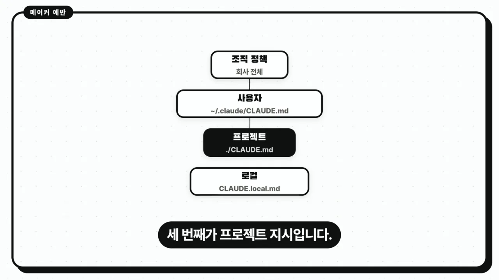
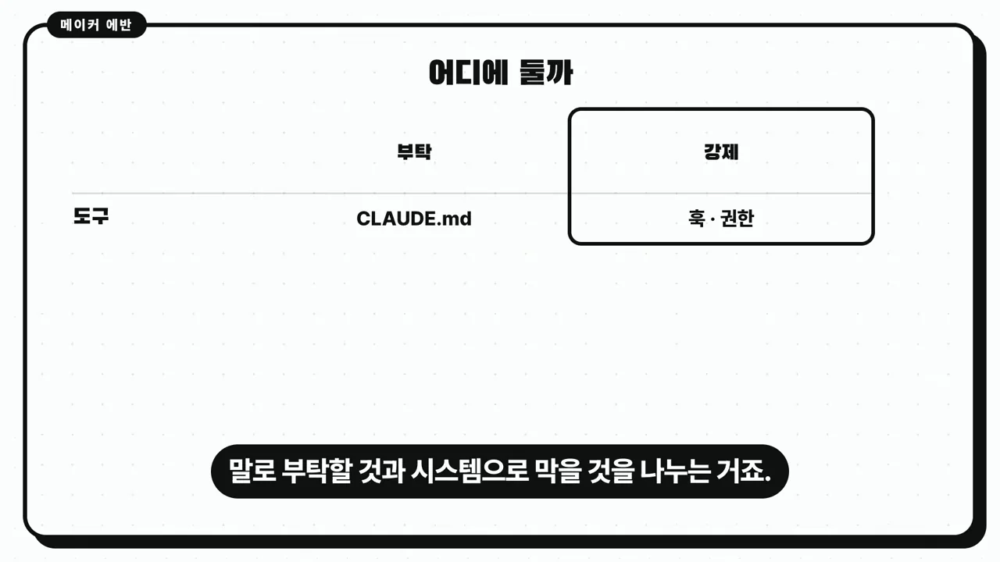
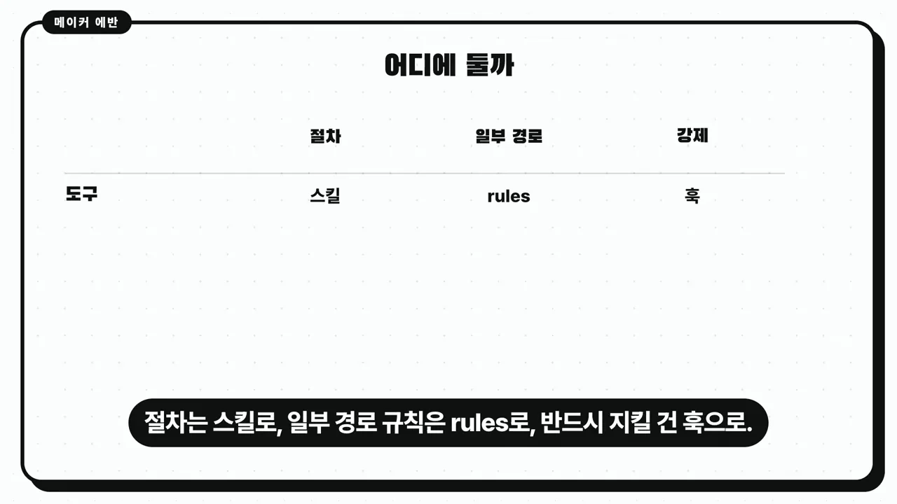
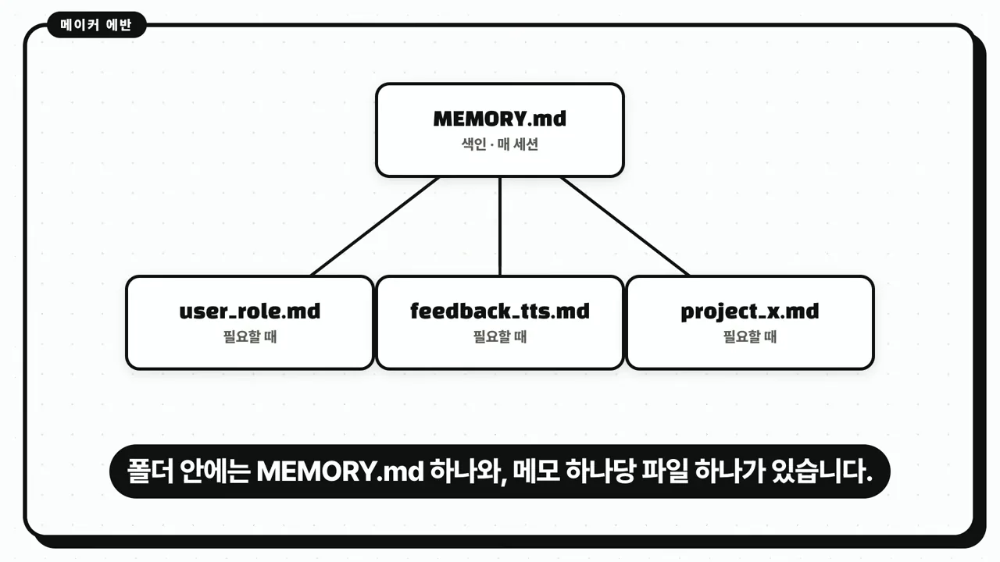
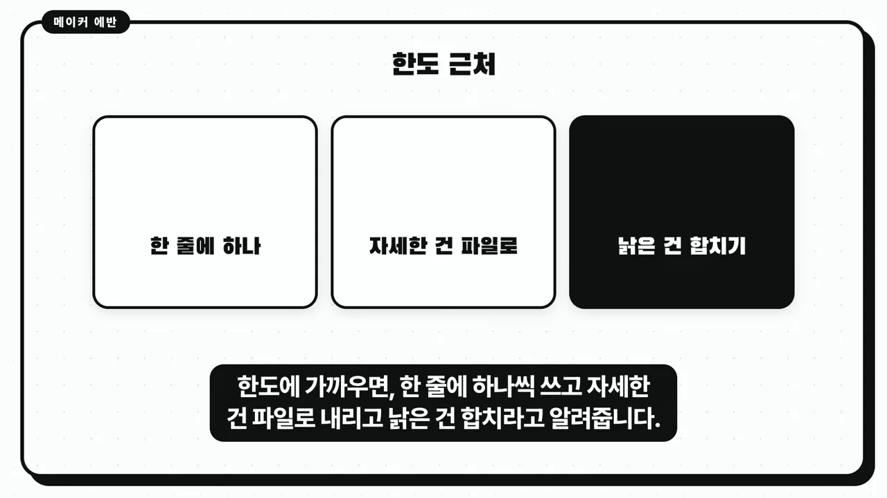
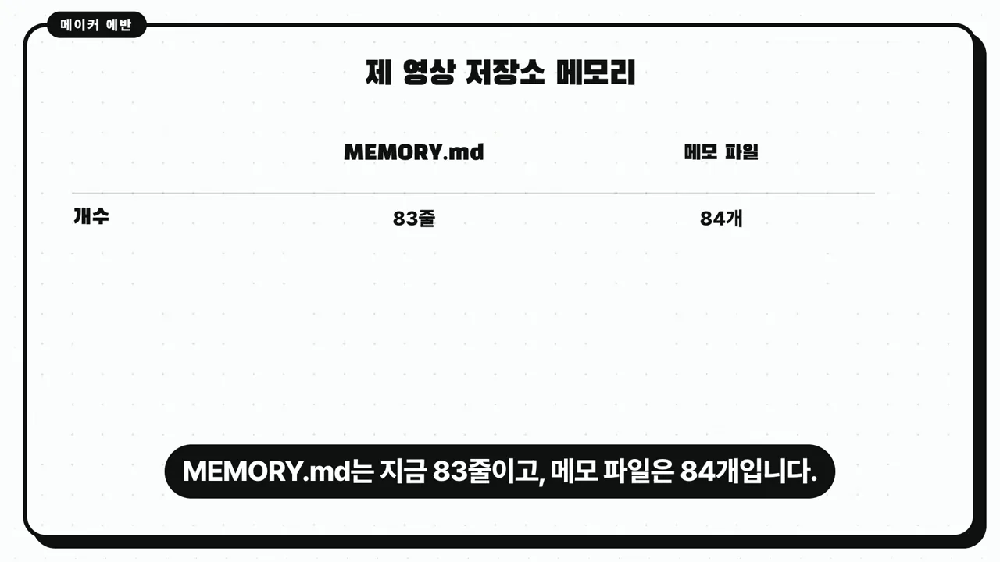
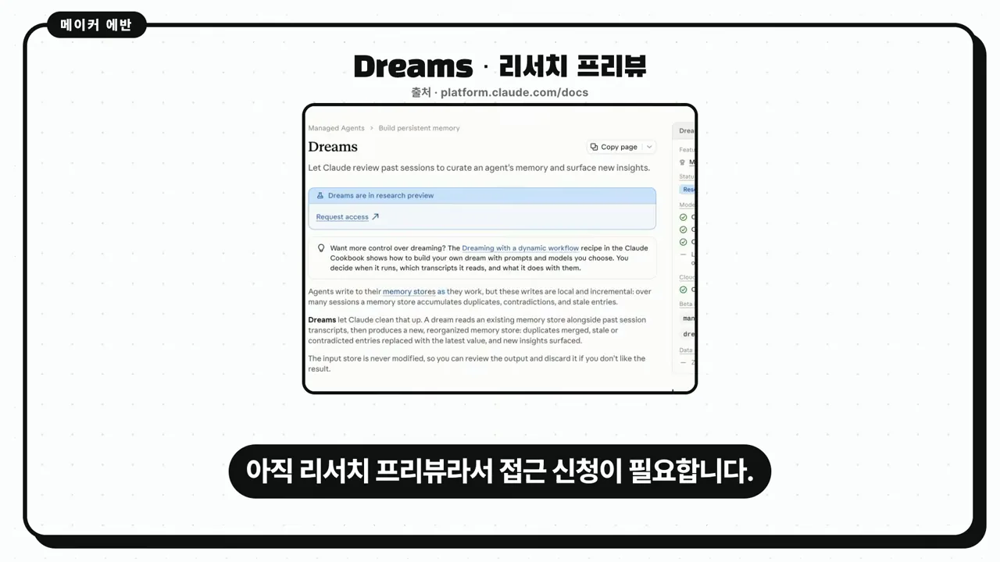
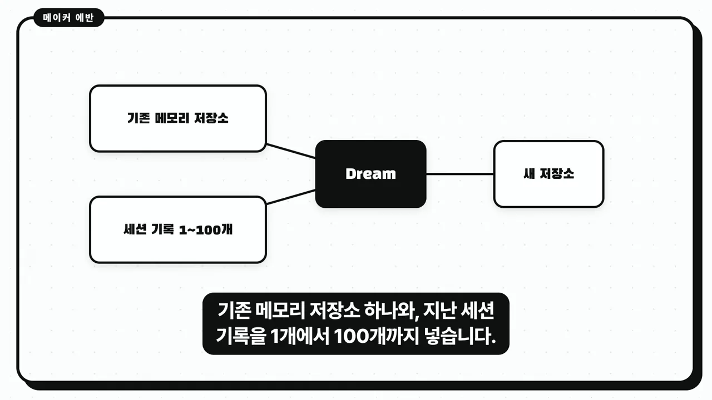
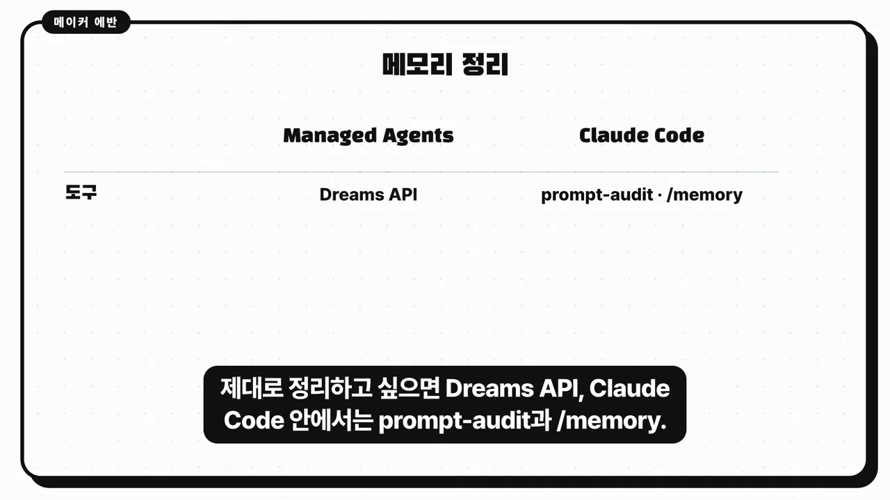

세션 사이를 잇는 두 장치
지난 1편에서는 앤트로픽의 포켓몬 메모 실험을 봤어요. 파일 413개를 쓴 Sonnet 3.7은 배지 1개, 9개만 쓴 Fable 5는 배지 4개를 땄어요. 많이 적는다고 똑똑해지지 않는다는 결론이었죠. 이번 편은 그 결론을 내 Claude Code에 어떻게 옮길지 다뤄요. 발표자는 화면에 공식 문서를 띄워 놓고 그 순서대로 따라가요.

출발점은 하나예요. Claude Code의 모든 세션은 빈 컨텍스트 창에서 시작해요. 어제 나눈 대화를 기억하지 않아요. 세션 사이에 지식을 넘기는 장치는 딱 두 개예요.
- CLAUDE.md는 내가 쓰는 지시문이에요. 빌드 명령, 코딩 규칙, 프로젝트 구조를 적어요.
- 자동 메모리는 클로드가 스스로 쓰는 메모예요. 내가 고쳐 준 것, 내 취향, 코드만 봐서는 모르는 프로젝트 사정을 적어요.
둘 다 세션을 시작할 때 들어가요. 다른 건 들어가는 양이에요. 아래 표의 오른쪽 칸에 테두리가 쳐져 있죠. CLAUDE.md는 파일 전체가 들어가지만, 자동 메모리는 처음 200줄 또는 25KB까지만 들어가요.

CLAUDE.md는 어디에, 얼마나 짧게
CLAUDE.md는 놓는 자리에 따라 적용 범위가 달라요. 위에서 아래로 갈수록 좁아지는 네 칸이에요. 사용자 칸에는 ~/.claude/CLAUDE.md, 프로젝트 칸에는 ./CLAUDE.md, 로컬 칸에는 CLAUDE.local.md라는 경로가 붙어 있어요.

| 위치 | 누구에게 적용되나요 | 깃에 올리나요 |
|---|---|---|
| 조직 정책 | 회사가 모든 직원 컴퓨터에 똑같이 배포 | 회사가 관리 |
사용자 ~/.claude/CLAUDE.md | 내 모든 프로젝트 | 아니요 |
프로젝트 ./CLAUDE.md | 이 저장소를 쓰는 팀 전체 | 예 |
로컬 CLAUDE.local.md | 이 프로젝트의 나만 | 아니요 |
하위 폴더에 둔 CLAUDE.md는 예외예요. 처음부터 불러오지 않고, 클로드가 그 폴더의 파일을 열 때 비로소 들어가요.
문서가 꼽는 세 가지: 길이, 구체성, 모순
문서가 가장 강조하는 건 길이예요. CLAUDE.md 하나당 200줄 아래가 목표예요. 아래 막대 두 개를 보면 짧은 파일은 '준수율 유지', 긴 파일은 '컨텍스트 소모 · 준수율 하락'이에요. 길게 쓸수록 자리도 많이 차지하고 말도 덜 들어요. 1편 실험과 같은 이야기예요.

두 번째는 구체성이에요. 발표자는 흐릿한 지시와 구체적인 지시를 짝지어 보여 줘요. 오른쪽처럼 맞는지 틀리는지 확인할 수 있는 문장이어야 지켜져요.
| 흐릿한 지시 | 구체적인 지시 |
|---|---|
| 코드를 깔끔하게 정리해라 | 들여쓰기는 2칸 |
| 변경 사항을 테스트해라 | 커밋 전에 npm test 실행 |
| 파일을 잘 정리해라 | API(Application Programming Interface) 핸들러는 src/api/handlers/에 |
세 번째는 모순이에요. 두 지시가 부딪치면 클로드는 아무거나 하나를 고를 수 있어요.
흔한 착각도 하나 짚어요. @경로로 다른 파일을 불러오면 파일은 깔끔해지지만 컨텍스트 비용은 그대로예요. 불러온 파일도 같이 다 들어가거든요. 반대로 사람만 볼 메모는 HTML(HyperText Markup Language) 주석(<!-- -->)으로 남기면 돼요. 주석은 컨텍스트에 넣기 전에 지워져서 토큰을 쓰지 않아요.
언제 적고, 어디로 빼고, 무엇을 훅으로 막나요
그러면 언제 CLAUDE.md에 한 줄을 더할까요. 문서는 네 가지 신호를 줘요.
- 클로드가 같은 실수를 두 번째 할 때
- 코드 리뷰에서 클로드가 알았어야 할 걸 지적받을 때
- 지난 세션에 한 정정을 이번 세션에 또 입력할 때
- 새로 온 팀원에게도 똑같은 설명이 필요할 때
반대로 CLAUDE.md 밖으로 빼야 할 것도 있어요. 여러 단계짜리 절차는 스킬로 빼요. 스킬은 필요할 때만 불러오니까요. 코드의 일부에만 해당하는 규칙은 .claude/rules/ 폴더로 빼고 paths를 지정해요. 그러면 클로드가 그 경로의 파일을 만질 때만 들어가요. 예를 들어 API 규칙은 src/api 아래 TypeScript 파일을 열 때만 불러와요.
CLAUDE.md는 설정이 아니라 컨텍스트예요
여기서 많이들 오해해요. CLAUDE.md는 시스템 프롬프트가 아니라, 그 뒤에 사용자 메시지로 전달돼요. 클로드는 읽고 따르려고 하지만 반드시 지킨다는 보장은 없어요.
그래서 어떤 경우에도 막아야 하는 동작은 훅으로 막아요. 훅은 정해진 시점에 실행되는 셸 명령이라, 클로드가 무엇을 판단하든 돌아요. 커밋 전에 린트를 꼭 돌려야 하면 훅이에요. 특정 명령을 아예 못 쓰게 하려면 권한 설정의 permissions.deny예요. 아래 표에서 오른쪽 '강제' 칸에만 테두리가 쳐져 있어요.

영상 끝의 정리 슬라이드는 같은 표를 한 줄 더 넓혀요. 절차는 스킬, 일부 경로는 rules, 강제는 훅이에요. 지금까지 나온 자리를 모으면 이렇게 돼요.
| 무엇을 | 어디에 | 언제 들어가나요 |
|---|---|---|
| 짧고 구체적인 지시 | CLAUDE.md | 매 세션 전체 |
| 여러 단계짜리 절차 | 스킬 | 필요할 때만 |
| 일부 경로에만 맞는 규칙 | .claude/rules/ + paths | 그 경로 파일을 만질 때만 |
| 어떤 경우에도 돌아야 할 동작 | 훅 | 정해진 시점마다, 판단과 무관 |
| 절대 쓰면 안 되는 명령 | 권한 설정 | 항상 막힘 |

자동 메모리: 네 종류와 200줄 색인
이제 클로드가 스스로 쓰는 쪽이에요. 자동 메모리에는 네 종류만 적고, 적지 않는 것도 정해져 있어요. 영상은 이걸 슬라이드 여러 장에 나눠 보여 주는데, 한 그림에 모으면 이래요.
기준은 1편의 Fable 5와 같아요. 화면에 보이는 건 적지 않고, 직접 알아내야만 생기는 것만 적어요. 매 세션 무언가를 저장하지도 않아요. 다음 대화에 쓸모가 있을 때만 남겨요.
MEMORY.md는 색인이에요
저장 위치는 ~/.claude/projects/<project>/memory/예요. 같은 저장소라면 워크트리와 하위 폴더가 전부 한 폴더를 같이 써요. 아래 그림의 위쪽 칸이 MEMORY.md, 아래 세 칸(user_role.md, feedback_tts.md, project_x.md)이 메모 하나당 하나씩 있는 파일이에요. 위 칸에는 '색인 · 매 세션', 아래 칸에는 '필요할 때'라고 적혀 있어요.

MEMORY.md는 한 줄에 메모 하나를 가리켜요. 세션 시작 때는 이 색인의 처음 200줄 또는 25KB까지만 들어가고, 그 뒤에 적힌 건 안 들어가요.
그래서 경고 장치가 있어요. 클로드가 MEMORY.md를 쓰고 나면 Claude Code가 길이를 재요. 한도에 가까우면 아래 세 가지를 하라고 알려 줘요. 한도를 넘으면 쓰기는 되지만, 색인을 다시 쓰라는 에러를 돌려줘요.

메모 파일에는 수정 시각이 modified 항목으로 자동 기록돼요. 그 사실이 얼마나 최신인지 클로드도 알 수 있게 하려는 장치예요.
발표자의 메모리 폴더
발표자는 자기 영상 작업 저장소의 숫자를 공개해요. 실제 폴더 화면 대신 숫자만 표로 보여 줘요. MEMORY.md가 83줄, 메모 파일이 84개예요. 한 줄마다 제목, 파일 링크, 한 줄 요약이 붙어 있어요.

예로 든 메모는 두 개예요.
- TTS(Text To Speech) 고칠 때도 통짜 1번: 챕터 하나만 다시 합성해 이어 붙였더니 음량이 13dB나 튀었다는 피드백 메모예요. 왜 그런지(Why)와 다음엔 어떻게 할지(How to apply)가 같이 적혀 있어요.
- 프로세스를 이름으로 죽이지 말 것: 비슷한 이름으로 프로세스를 정리하다 음성 합성 요청까지 같이 죽인 적이 있어서 생긴 메모예요.
둘 다 코드를 아무리 읽어도 안 나오는 정보예요. 한 번 당하고 나서야 생기고, 안 적으면 다음 세션도 똑같이 당해요. 발표자는 메모리가 하는 일이 정확히 이거라고 말해요.
메모리 정리 도구와 조심할 것
1편에서 본 드리밍은 지금 Claude Managed Agents의 Dreams로 공개돼 있어요. 화면의 문서 맨 위에 'Dreams are in research preview'라는 안내가 보여요. 아직 리서치 프리뷰라 접근 신청이 필요해요.

방식은 아래 그림 그대로예요. 왼쪽에 기존 메모리 저장소 하나와 세션 기록 1~100개를 넣으면, 가운데 Dream이 오른쪽에 새 저장소를 만들어요.

- 하는 일: 기록을 읽고 메모리를 검증해요. 중복은 합치고, 낡거나 모순된 건 최신 값으로 바꾸고, 새로 보이는 패턴을 추가해요.
- 원본: 건드리지 않아요. 새 저장소가 마음에 안 들면 버리면 돼요.
- 지시문: '코딩 스타일 취향에 집중하고 일회성 디버깅 메모는 무시하라'처럼 방향을 줄 수 있어요. 특정 문장을 고치라는 지시는 거의 안 먹어요. 전체를 다시 정리하는 작업이지 문장 편집기가 아니라서요.
- 시간과 비용: 몇 분에서 몇 시간이 걸리고, 고른 모델의 일반 토큰 요금이 나가요. 세션을 많이 넣을수록 거의 비례해 늘어나니 작게 시작하라고 권해요.
Claude Code 안에서 정리하기
Managed Agents를 안 쓴다면 Claude Code 안의 도구를 써요. 첫째는 /doctor prompt-audit이에요. 지시 파일을 전부 훑어서 아래 세 가지를 찾아 줘요.

둘째는 /memory예요. 자동 메모리 폴더를 직접 보고 고칠 수 있어요. 전부 그냥 마크다운 파일이라 틀린 메모는 지우면 돼요. 말로 시킬 수도 있어요. '이거 기억해'라고 하면 자동 메모리에, 'CLAUDE.md에 추가해'라고 하면 지시 파일에 들어가요.
컴팩션도 알아 두면 좋아요. 대화가 길어져 요약되고 나면 루트의 CLAUDE.md는 디스크에서 다시 읽어 넣어 줘요. 하지만 대화로만 말한 지시는 요약하면서 사라질 수 있어요. 계속 지켜야 하는 거라면 대화가 아니라 파일에 적어야 해요.
조심할 것 세 가지
- 자동 메모리는 이 컴퓨터에만 있어요. 다른 컴퓨터나 클라우드 세션과 공유되지 않아요.
- 메모리는 클로드가 판단해서 써요. 1편의 포켓몬센터처럼 틀린 메모가 들어가면 다음 세션은 그걸 믿고 출발해요. 가끔 직접 열어 읽어 봐야 해요.
- 메모리도 지시문도 강제가 아니에요. 꼭 막아야 하는 건 훅과 권한으로 막아요.
마지막 정리 슬라이드는 메모리 정리 도구를 두 칸으로 나눠요. Managed Agents에서는 Dreams API, Claude Code에서는 prompt-audit과 /memory예요.

발표자는 오늘 본 구조가 해마가 기억을 재생하고 잠자며 정리하는 방식과 놀랄 만큼 닮았다고 말하며, 다음 편에서 신경망 이야기로 이어 가겠다고 해요.